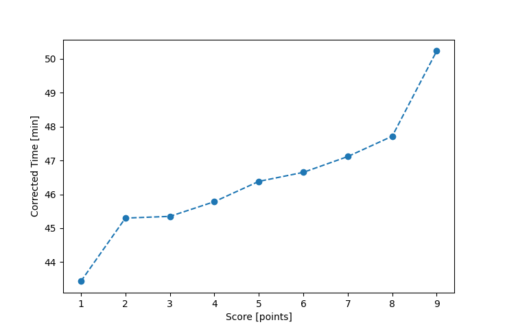

| Wind: | 2-3 (BFT) |
|---|---|
| RC: | Stacy_OGail_B |
| Date: | July 17, 2016 |
| Notes: | None |
| Rank / Score | Name | Boat | Input Time [mm:ss] | Input Offset [mm:ss] | Race Time [mm:ss] | Race Time [s] | Handicap | Corrected Time [s] | Corrected Time [mm:ss] |
|---|---|---|---|---|---|---|---|---|---|
| 1.0 | Paul_B | BCN | 37:47 | 00:00 | 37:47 | 2267 | 0.87000 | 2606 | 43:26 |
| 2.0 | Barry_O | HLR14 | 50:36 | 00:00 | 50:36 | 3036 | 1.11700 | 2718 | 45:18 |
| 3.0 | Chris_E | SF | 45:32 | 00:00 | 45:32 | 2732 | 1.00400 | 2721 | 45:21 |
| 4.0 | David_Bu | SF | 45:58 | 00:00 | 45:58 | 2758 | 1.00400 | 2747 | 45:47 |
| 5.0 | Rod_H | LASEM | 45:08 | 00:00 | 45:08 | 2708 | 0.97300 | 2783 | 46:23 |
| 6.0 | Ralph_H | SF | 46:50 | 00:00 | 46:50 | 2810 | 1.00400 | 2799 | 46:39 |
| 7.0 | Bill_P | SF | 47:18 | 00:00 | 47:18 | 2838 | 1.00400 | 2827 | 47:07 |
| 8.0 | Lewis_V | BCN | 41:31 | 00:00 | 41:31 | 2491 | 0.87000 | 2863 | 47:43 |
| 9.0 | Pat_B | WF | 46:04 | 00:00 | 46:04 | 2764 | 0.91700 | 3014 | 50:14 |

Application Notes:
All race results are unofficial
View source code at https://github.com/cessnao3/portsmouthracecalc/